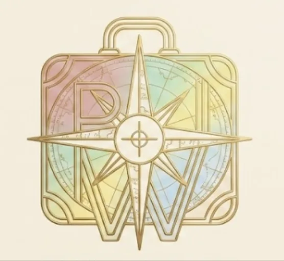
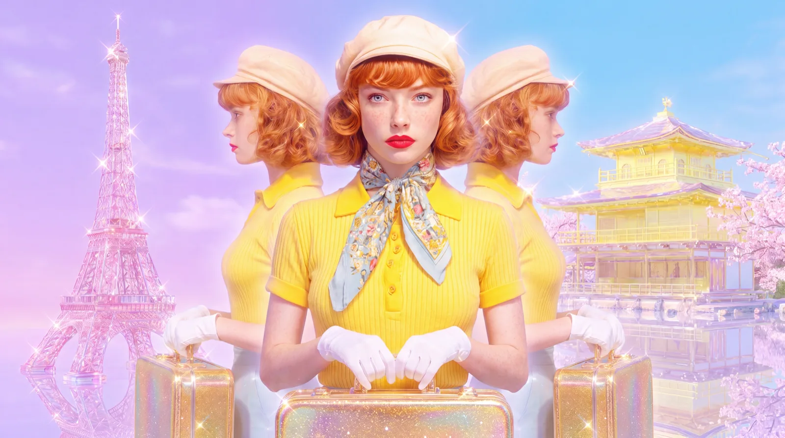
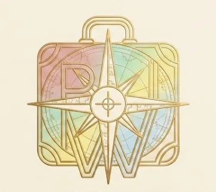
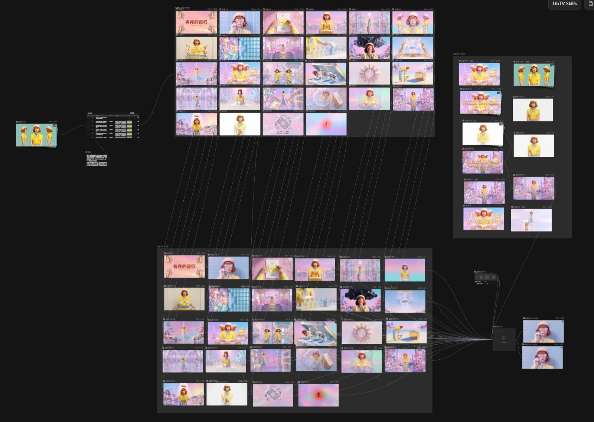
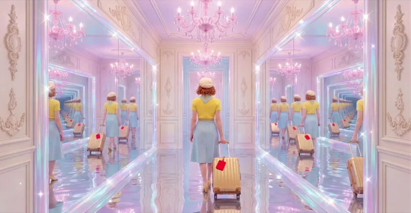

AI Film / PROJECT 09
有序的远行 / Orderly Journey
这是一场关于"旅行收纳美学"的视觉盛宴。
- ROLE
- 概念、AIGC 影像与视觉叙事
- TIME
- 项目年份待确认
- TOOLS
- AIGC 图片与视频、剪辑；详细工具未记录
- TYPE
- AI film
- STATUS
- Completed film / External video

01 / ONE-LINE CONCEPT
One-line concept
这是一场关于"旅行收纳美学"的视觉盛宴。通过致敬导演韦斯·安德森的经典视觉公式，为虚构高端旅行箱品牌 "Precise Wandering" 打造了一段充满秩序感、强迫症快感与复古奇幻色彩的广告视频。视频核心围绕主角塞莱斯特 (Celeste) 与神秘装置"金色绝对收纳框"展开，探讨了在旅途中，如何在有限的行李箱空间中装进最多的行李。
02 / FROM CONCEPT TO FINAL FILM
From concept to final film
- 01
Concept
为虚构旅行箱品牌 Precise Wandering 构建“有序，即自由”的叙事，用金色收纳框串起主角 Celeste 的旅行收纳。
已有：概念与剧情说明。 - 02
Moodboard
粉黛、柠檬黄、粉末蓝与奶油色形成复古、对称的视觉方向。
已有：色彩矩阵；完整灵感板未提供。 - 03
Storyboard
从角色设定、剧本到分镜脚本，再进入生成。围绕箱内空间与收纳动作组织镜头。
已有：制作流程说明；逐镜分镜稿未提供。 - 04
Generation
制作流程包括文生图、图生视频与文生音乐。
已有：流程图；模型版本和提示词未提供。 - 05
Consistency
以 Celeste 的角色设定、统一配色和收纳装置作为贯穿画面的视觉锚点。
已有：角色设定；具体一致性处理记录待补充。 - 06
Motion
围绕取放、移动和收纳，把静态构图转为时间中的秩序感。
根据影片概念整理；独立运动测试片段未提供。 - 07
Editing
将镜头、音乐与动作组织为完整短片。
已有：137 秒、28 个镜头、1080p 参数；剪辑工程未提供。 - 08
Final film
有序的远行 / Orderly Journey。
137 秒 · 28 shots · 1080p · 飞书成片。
03 / SELECTED FRAMES & VISUAL MATERIAL
Selected frames & visual material




04 / FINAL FILM
Final film
完整影片托管于飞书，可能需要登录或访问权限。本站保留关键画面与项目说明，不依赖外部视频加载。
- 品牌名称 (Brand)：Precise Wandering
- 品牌口号 (Slogan)：误差 0.00% / 有序，即自由
- 参数：137 Seconds / 28 Shots / 1080p Resolution
CONTINUE EXPLORING